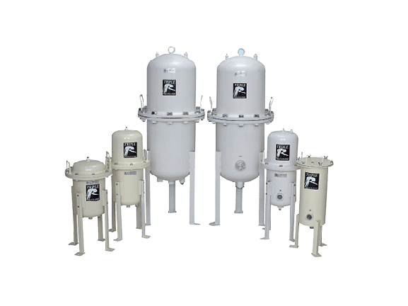
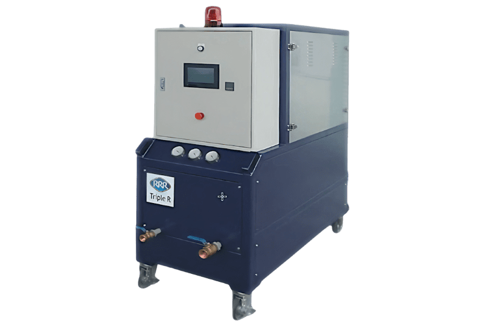
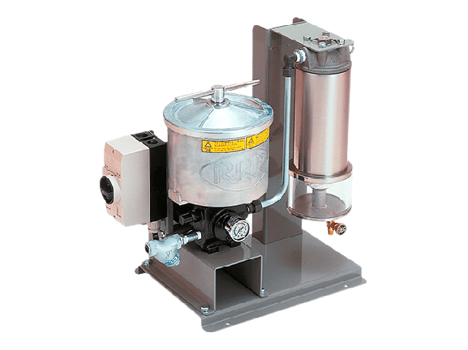
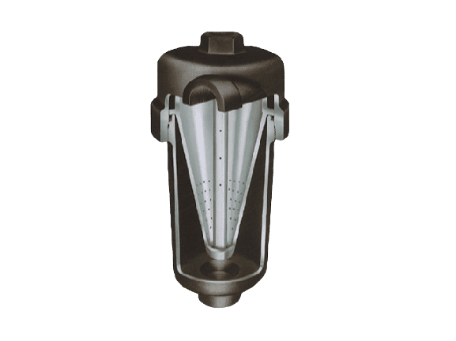
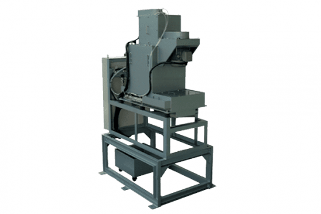

Stop met olie verversen.Begin met olie reinigen.
Triple R-bypassfilters verwijderen vaste deeltjes, varnish, water en luchtbellen uit hydraulische olie en smeerolie, met één filterconcept. Minder stilstand, langere olielevensduur, lagere kosten.

Vertrouwd door OEM’s, multinationals en kmo’s
- KOMATSU
- Battenfeld
- ENGEL
- Stena Line
- SKF
- Rolls-Royce
- Castrol
- Equans
- Ferrari
- Epiroc
- Everllence
- SOUDAL
- Aurubis
- ENGIE
Eén filterelement tegen drie soorten vervuiling
Vaste deeltjes
Slijtagemetaal, stof en silica slijpen pompen, kleppen en cilinders.
Tot 99% verwijderdVarnish & sludge
Oxidatieresten zetten zich af op kleppen; servo- en proportionele kleppen gaan haperen.
V-element: 1 µm absoluutWater
Water versnelt oxidatie en corrosie. De cellulose in het element absorbeert het.
Tot < 100 ppmLucht & schuim
Luchtbellen veroorzaken cavitatie en lawaai. De Quicktoron ontlucht de olie.
Tot 95% verwijderdVan filterelement tot mobiele oliereiniger
- Basis van elk systeem

Filterelementen
3-in-1 dieptefilter voor deeltjes, varnish en water.
- Op de drukleiding

BU-serie
Bypassfilter direct op de hogedrukleiding, zonder pomp of motor.
- Offline

SE-serie
Offline oliereiniger met eigen motor-pompgroep, stationair of mobiel.
- Grote volumes

OSCA-serie
Hoog debiet voor grote tanks, smeerolie en hoge viscositeit.
- Hoge viscositeit

SS-serie
Stalen filterhuizen voor 2 tot 6 elementen.
- Motorolie
TR-serie
Bypassfilter voor motorolie en systemen onder 6 bar.
- Water

Vacuümdroger
Verwijdert vrij en opgelost water, zonder verbruiksmateriaal.
- Water

WS-serie
Coalescentie olie-waterafscheider voor continue waterinloop.
- Lucht & schuim

Quicktoron
Cycloon-ontluchter tegen schuim, cavitatie en lawaai.
- Proceswater

Centrifuges
Deeltjes tot 3 µm uit koelvloeistof en proceswater.

Wat propere olie oplevert
Van spuitgietmachine tot scheepsmotor

Weet hoe proper uw olie écht is
Een labo-analyse van uw olie met persoonlijk advies van een Triple R-specialist. Resultaat binnen [X] werkdagen.
Bespreek uw installatie met een specialist
Beschrijf uw machines in 2 minuten en ontvang vrijblijvend advies over de juiste filteroplossing.

Maxim Van Uytven
Managing Director
Team Triple R Europe, Aartselaar. Portret volgt na de fotoshoot.